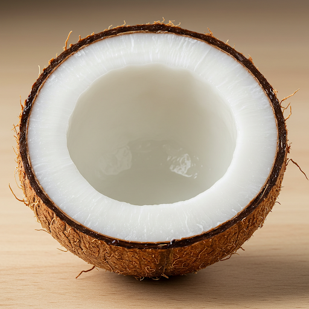
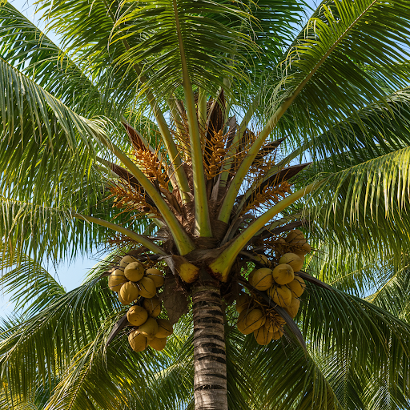

O Coco
O coco é um fruto tropical delicioso e nutritivo, apreciado em todo o mundo por sua água refrescante e polpa saborosa. Além disso, ele oferece diversos benefícios para a saúde e pode ser utilizado de diversas formas na culinária e na indústria.
O Coqueiro
O coqueiro (Cocos nucifera) é uma palmeira majestosa, símbolo de regiões tropicais e praias paradisíacas. Adaptado a climas quentes e úmidos, ele pode atingir até 30 metros de altura e vive, em média, 80 anos. Seus frutos, os cocos, são essenciais para a economia de diversas comunidades ao redor do mundo.
Produção e Curiosidades
O tempo para um coqueiro começar a produzir cocos varia de 6 a 10 anos, dependendo da variedade e das condições de cultivo. Cada árvore pode gerar de 70 a 150 frutos por ano, com uma produção que dura cerca de 15 anos. O coco é um fruto versátil, utilizado na produção de água de coco, óleo, leite, farinha, açúcar e diversos outros produtos.